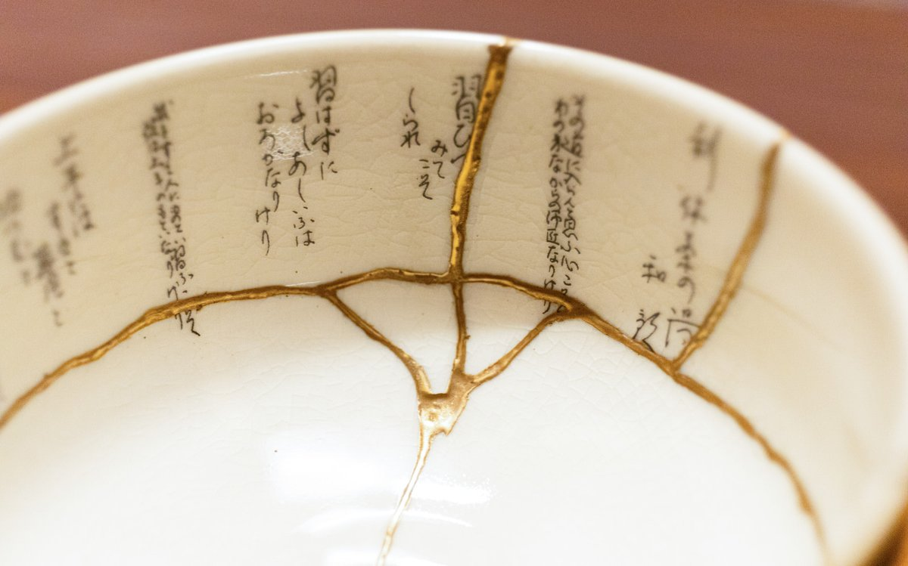
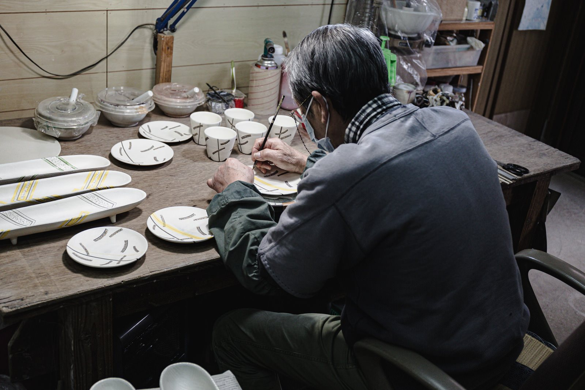
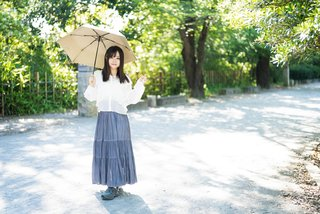
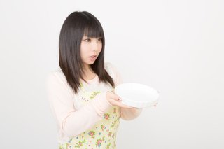

Before → After作品ストーリー
2つに割れた茶碗が、「稲妻」になるまで。

Before
→

After
引っ越しの荷ほどきで、2つに割れてしまった白い茶碗。「捨てられなくて、箱にしまっていました」と持ってきてくださいました。割れの線が空を走る稲妻のように見えたので、金を少し太めにのせて仕上げています。
30代・会社員 ｜ 本漆 金継ぎ教室（全10回・3か月）
Works

Works
教室で生まれた作品と、生徒さんの声をご紹介します。
コースや割れ方で絞り込んで、あなたの器の「これから」を想像してみてください。
TOP ／ 作品と声
コースで絞り込む
Before → After作品ストーリー
Before
→

After
引っ越しの荷ほどきで、2つに割れてしまった白い茶碗。「捨てられなくて、箱にしまっていました」と持ってきてくださいました。割れの線が空を走る稲妻のように見えたので、金を少し太めにのせて仕上げています。
30代・会社員 ｜ 本漆 金継ぎ教室（全10回・3か月）
Numbers数字で見る景
1,800名
2024年の開講から
4人に1人
体験のあとに入会された方
98%
受講後のアンケートより
20〜70代
いちばん多いのは30代
Voice生徒の声
割れたまま箱にしまっていた湯のみ。継ぎ目が入って、前よりもっと好きになりました。
30代・会社員
本漆 金継ぎ教室（4か月）
先生がずっと手元を見てくれるので安心でした。持ち帰った器は、玄関に飾っています。

20代・学生
一日体験
欠けてしまったお気に入りのお皿。どこに金をのせるか考える時間も楽しかったです。

40代・主婦
本漆 金継ぎ教室（6か月）
器がなくても参加できるのがうれしい。陶片選びから、ふたりで夢中になりました。
40代・会社員
金継ぎアクセサリー
Interviewインタビュー
30代・会社員 Aさん ｜ 本漆 金継ぎ教室（4か月）
Reservationご予約
まずは2時間の一日体験から。器も道具も教室でご用意するので、手ぶらでお越しください。
ご予約・お問い合わせはお電話のみで承っております
090-2323-4771受付時間 10:00 – 18:00（水・木・土・日）／ 開講日以外は留守番電話で折り返します
Accessアクセス
〒530-0016 大阪府大阪市北区中崎 0-0-0 2F
地下鉄谷町線「中崎町駅」2番出口より徒歩3分
阪急「大阪梅田駅」茶屋町口より徒歩10分
開講日 水・木・土・日 10:30 – 20:30
TEL 090-2323-4771（ご予約はお電話のみ）